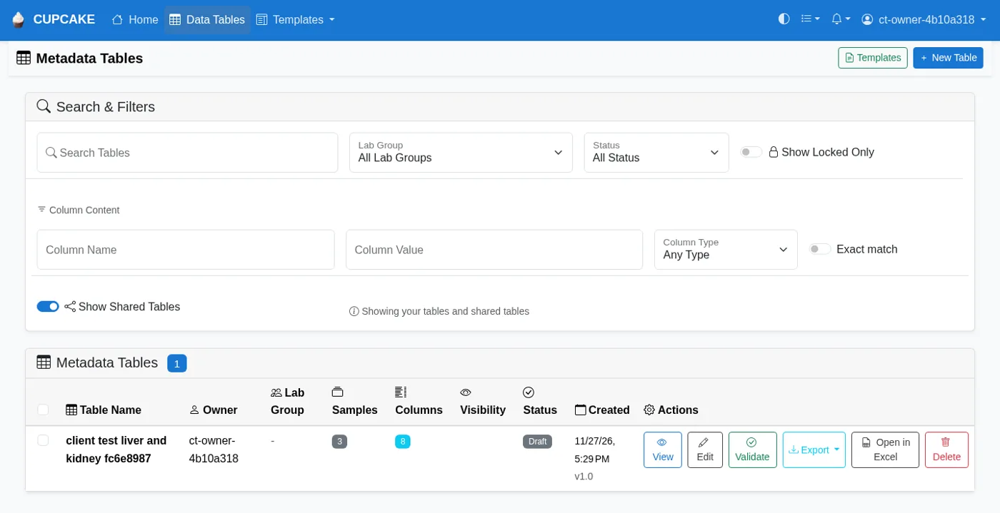
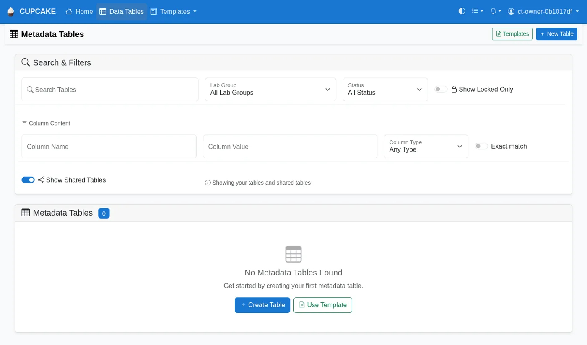
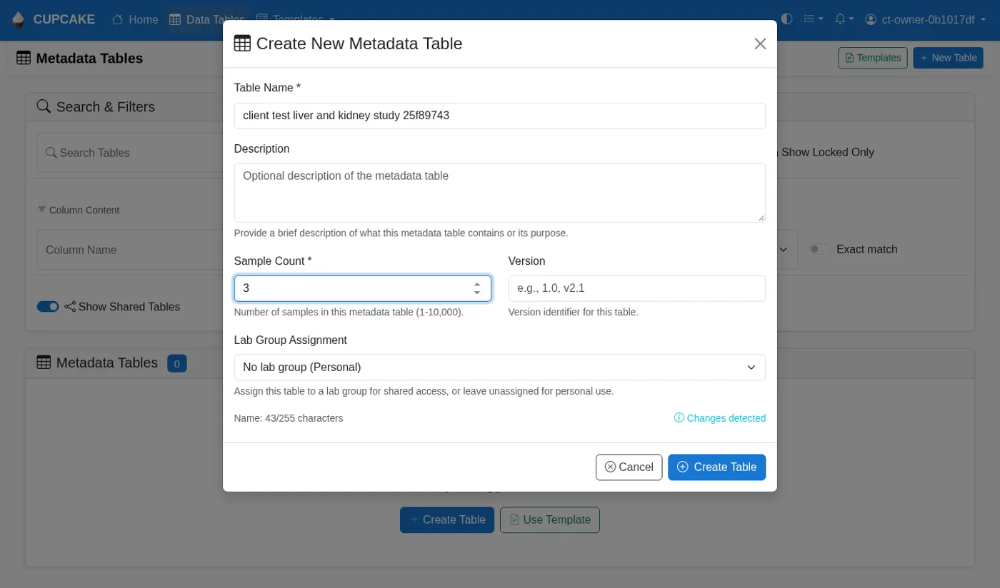
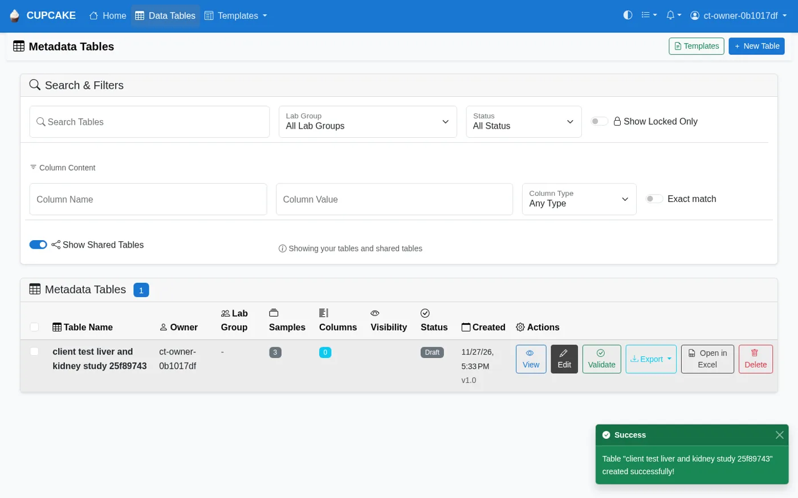

Metadata Tables lists the tables you can open: your own, those of your lab groups and, with Show Shared Tables, those shared with you.

Finding a table
Search & Filters narrows the list by name, lab group, status (published or draft) and locked tables. Column Content finds tables by a column name or value, of any type or only characteristics, factor values or comments; Exact match matches the whole value. Staff see every table with Admin View (All Tables).
Creating a table
-
Choose New Table.

-
Enter the table's name and its number of samples, from 1 to 10,000. Optionally describe it, give it a version and assign it to a lab group; a table without a lab group is personal.

-
Save. The table appears in the list.

Use Template creates a table from a table template instead, with its columns already set up; see Templates.
Working with tables
Each row's actions View, Edit, Validate, Export and Delete the table. Locked tables are marked and cannot be changed.
Select several tables to export them together with Bulk Export SDRF or Bulk Export Excel.